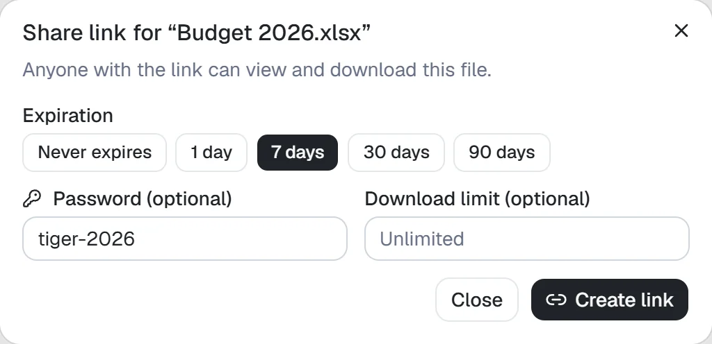

分享
有两种分享方式：共享给有账号的人，或通过链接分享给任何人。
与同事共享
右键点击文件夹或文件，选择共享给…。输入用户名或用户组，选择允许的操作，可选填访问权限结束日期，再点击添加。如果你自己的访问权限有到期日，就不能给自己、自己所属用户组或所有人授予更长的权限。
项目会出现在对方菜单的与我共享中，并通过铃铛通知（已配置邮件时也会发送邮件）：参阅通知。
角色
| 角色 | 可执行的操作 |
|---|---|
| 查看者 | 浏览、预览和下载 |
| 编辑者 | 还可上传、编辑、删除和创建分享链接，但每项操作仍须账号获准执行（控制面板 › 用户） |
| 管理者 | 账号获准分享时，还可管理成员与共享权限 |
| 所有者 | 账号获准删除时，还可删除空间 |
通过链接分享
右键点击项目，选择创建分享链接，或选中后点击工具栏的创建分享链接。除非另作设置，持有链接的任何人都无需账号即可查看和下载。

- 到期时间：链接在 1、7、30 或 90 天后失效，也可设为永不过期。
- 密码：访客必须先输入密码才能查看，一天后需重新输入。密码长度须满足账号密码的要求（控制面板 › 常规）。同一链接密码错误十次后，每次重试都需等待更长时间，不论来源地址。请将密码与链接分开发送。
- 下载次数上限：达到次数后链接失效。恢复下载或在视频中跳转只计为一次；文件夹内每个文件分别计数。
- 访客可以：决定是否允许下载，以及文件夹是否允许上传文件。详见下文。
点击链接旁的编辑链接可修改密码、到期时间、下载次数上限或访客权限，地址保持不变。设置新密码后，之前打开过链接的人也必须输入新密码。
通过链接接收文件
如果要收集文件，例如向客户收件，创建文件夹链接并勾选上传文件。访客会看到上传按钮，也可将文件拖入文件夹。
- 同时勾选只能上传时，访客看不到文件夹内容，也无法下载，只会看到向该文件夹发送文件的区域。拖入文件夹时会上传其中的文件；名称已存在时，以新名称保存，不向访客透露冲突。
- 上传的文件归你所有，计入空间容量，遵守常规命名规则和上传大小限制。重名文件会加上数字，例如
report (1).pdf。 - 每次上传会以你的名字和通过分享链接标注在活动日志中，也记录在链接访问日志。收到文件时会通知你（参阅通知）。
- 只有你仍可修改文件夹时，链接上传才有效。失去权限，或文件夹移出原共享文件夹后，链接上传会停止。
- 同一链接尚未完成的上传同时最多占用 20 GB。通过链接上传的任务一天未收到数据后会被丢弃，访客需重新发送该文件。
仅供查看的链接
取消勾选下载后，访客只能预览文件：下载按钮和 ZIP 下载选项会消失，服务器也会拒绝通过该链接下载。
这只能增加保存难度，并非保护措施。为了显示预览，完整文件仍会发送到访客浏览器；有意保存的人可以从浏览器保存或截图。不要依赖此设置保护不得流出公司的文件。
你的链接
菜单中的我的分享链接列出你创建的所有链接、到期时间和使用次数。选中链接可复制、编辑或删除；删除链接会立即使其失效。
将列表切换为所有我可管理的链接，还可看到别人在你管理的空间、或你拥有的文件上创建的链接。你也能编辑、删除这些链接，并查看谁打开过它们。项目的分享对话框和详细信息窗格显示同样的链接。
创建者失去项目访问权限或分享权限（例如离开团队空间），或账号被禁用后，链接也会失效。删除账号会删除该账号创建的链接。
管理员设置
控制面板 › 所有分享链接列出所有空间的公开链接和创建者。可按空间、创建者、有效状态筛选，然后编辑、删除或打开访问日志。其他人个人空间中的链接只能删除，不显示链接地址和项目（参阅管理员能看到什么）。
在控制面板 › 常规 › 分享链接中设置规则：
- 允许公开分享链接：关闭后无人可创建链接，现有链接全部停止工作，直到重新开启。链接不会删除。
- 要求密码：新链接必须设置密码，已有密码也不能移除。
- 最长有效期：新增或修改的链接必须在指定天数内到期。
后两项规则只适用于之后新增或修改的链接。之前创建的链接保持原状；请在所有分享链接中找出并编辑或删除。
空间
空间是具有独立成员和容量限制的驱动器。
- 我的文件：个人空间，除非主动共享其中项目，否则只有你能看到。
- 全部文件：公司共用空间，管理员可以修改名称。
- 团队空间：用于部门或项目，管理者可添加和移除成员。